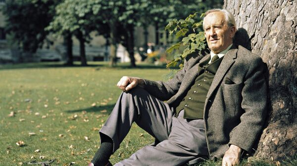

Vitajte vo svete Pána prsteňov!
"Pán prsteňov" je epický román anglického spisovateľa J. R. R. Tolkiena, jedno z najznámejších diel žánru fantasy. "Pán prsteňov" bol napísaný ako jedna kniha, ale kvôli rozsahu v prvom vydaní bol rozdelený na tri časti. "Pán prsteňov" je jednou z najznámejších a najpopulárnejších kníh 20. storočia. Kniha bola preložená do najmenej 38 jazykov.
Monumentálne dielo profesora Tolkiena sa zapísalo do dejín svetovej literatúry ako trvalý etalón epiky a predchodca modernej fantasy. Stanovená myšlienka, ktorá sa stala pilierom kultúrneho dedičstva, vychádzajúca z folklóru a autorovho vlastného výskumu, iniciovala celosvetový posun v písaní fantastiky. Stovky nasledovníkov tohto žánru, odchovaných svetom Stredozeme, vytvorili tisíce svetov s vlastnými elfmi, trpaslíkmi a orkami, morálkou, bojom dobra a zla. Samotný "Pán prsteňov" je dodnes neprekonaným vrcholom, pokiaľ ide o hĺbku rozvoja sveta a vyrozprávaného príbehu.

Dej románu je známy, možno o niečo menej ako v Biblii. Frodo, hobit, ktorý zdedil prsteň moci po svojom strýkovi Bilbovi, sa vydáva na nebezpečnú cestu do srdca krajiny Zla, kde musí v ohni Hory osudu naplniť osud Temného pána. Počas svojho dobrodružstva si získa verných a láskavých priateľov, medzi ktorými sú mág, elf, trpaslík, ľudia a hobiti. Skúšky hrdinov, ktorí sa stali legendárnymi vo svete slobodných národov Stredozeme, sú opísané v trilógii: "Spoločenstvo prsteňa", "Dve pevnosti", "Návrat kráľa".
Všetko sa to začalo odliatím Prsteňov moci.
Tri dostali nesmrteľní elfovia, sedem jaskynní trpaslíci a deväť králi ľudskej rasy.
V roku 1966 vyšiel krátky animovaný film Genea Deitcha, ktorý vznikol v koprodukcii USA a Československa. V kreslenom filme, ktorý vznikol za mesiac, boli udalosti "Hobita" výrazne zredukované a zmenené: v príbehu nie sú trpaslíci, ale je tu istá princezná, strážca a generál Thorin. Animácia je veľmi skicovitá, postavy nehovoria a celé rozprávanie vedie rozprávač. V roku 2012 bol animovaný film zverejnený na YouTube. V roku 1977 vyšiel celovečerný animovaný film Hobit amerických režisérov Arthura Rankina a Julesa Bassa. novozélandský režisér Peter Jackson adaptoval Hobita ako filmovú trilógiu, ktorú situoval ako prequel k svojim filmom Pán prsteňov. "Pán prsteňov" je jedným z najväčších projektov v dejinách filmu. Jeho realizácia trvala osem rokov; všetky tri filmy sa natáčali súčasne na Novom Zélande, rodnej krajine Petra Jacksona. Každý z filmov trilógie má špeciálnu rozšírenú verziu, ktorá vyšla na DVD rok po uvedení príslušnej kinoverzie. Filmy sledujú hlavnú dejovú líniu knihy, ale vynechávajú niektoré podstatné prvky príbehu a obsahujú doplnky a odchýlky od predlohy.